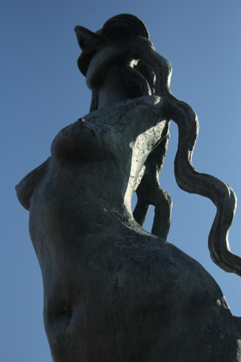
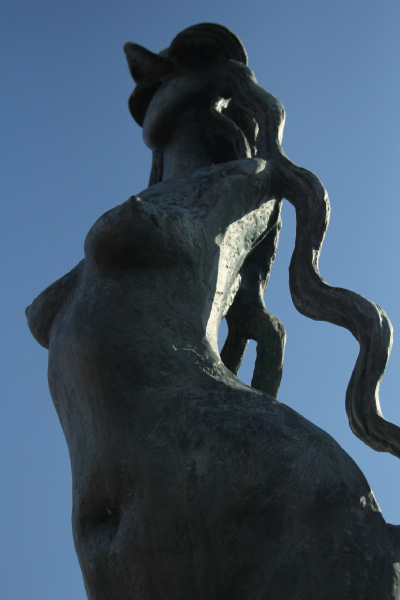
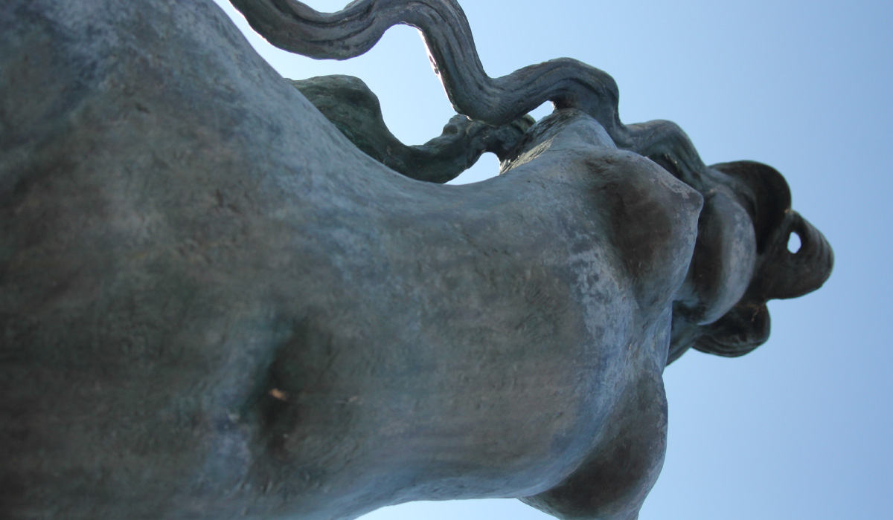
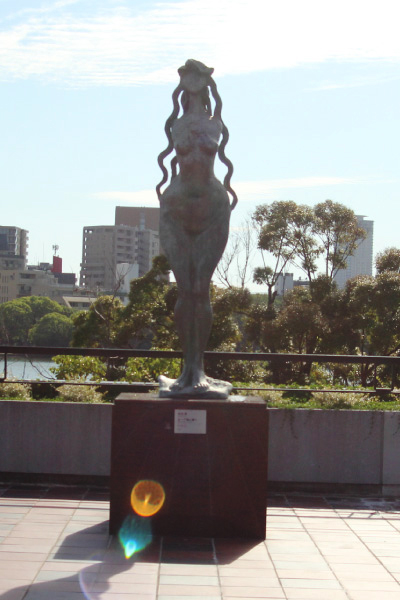
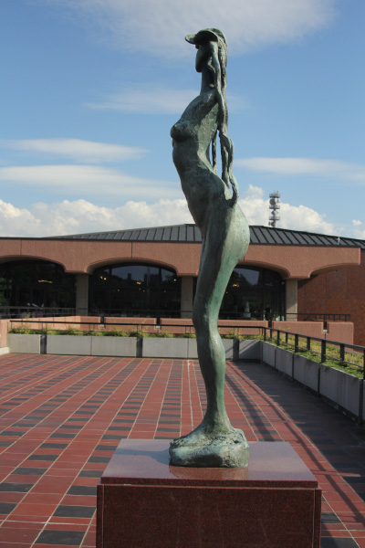
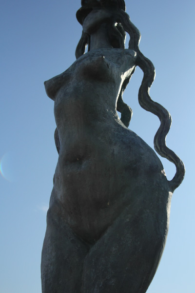
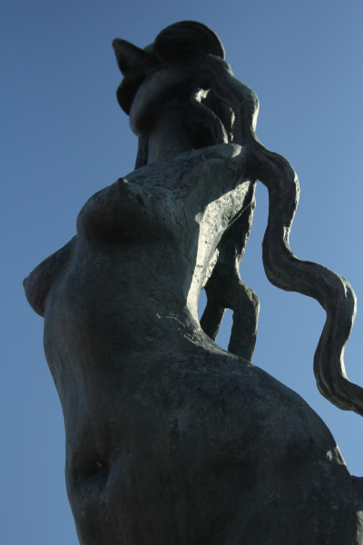

木内 克




木内克は渡仏し、アントワーヌ・ブールデルの指導を受けた。二科展などに多数出品し、テラコッタ
の作品を多く残した。妻の木内てるも彫刻家である。木内の作品は、人体や猫などの姿が、親しみや
すい独特の形によって、生き生きと表現されている。木内は、形を写すだけでなく、生命そのものを
表す造形を目指した。この作品もデフォルメされた裸婦像であるが、女性が持つ神秘性と生命力を感
じることができる作品だ。エーゲ海ではないが、背景に見える大濠公園の池との相性も良い。